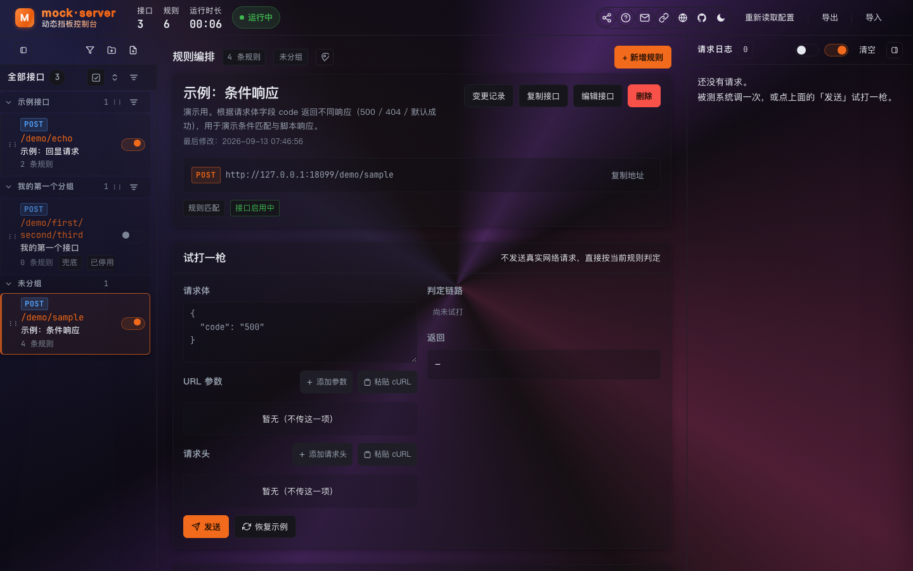

Mock Server 操作手册
给测试 / 联调同事的快速上手指南 —— 5 分钟学会用挡板接口代替真实上游做联调。
01快速上手
这是一个可配置的假接口（挡板 / mock）服务：被测系统不连真实上游，改连这里，就能按你配的规则返回成功、失败、超时等各种场景。
- 浏览器打开管理界面：
http://<挡板机IP>:18080/（有账号就先登录）； - 左栏找到目标接口（或新建成一个，见第三节）；
- 把被测系统的上游地址改成挡板地址：
http://<挡板机IP>:18080（结尾不要带/）； - 被测系统正常发起调用 → 右栏日志立刻能看到每次请求和返回；
- 要改返回内容？中栏改规则、保存，立即生效，不用重启。
调用规则：挡板地址 = 根地址 +
/模块/接口路径。比如接口配的是模块 demo、路径 sample，完整调用地址就是 http://127.0.0.1:18080/demo/sample。点接口卡片上的调用地址条可直接复制。02界面导览

| 区域 | 是什么 | 常用操作 |
|---|---|---|
| 左栏 | 接口列表，按分组归拢 | 新建分组 / 接口；开关接口；搜索过滤；编辑 / 删除 |
| 中栏 | 当前接口的规则编排 + 试打 | 加规则、调顺序（↑↓）、编辑接口、看变更记录 |
| 右栏 | 实时请求日志 | 自动刷新；只看当前接口；点条目看请求 / 返回详情 |
| 顶栏 | 全局动作与入口 | 分享、帮助（本页）、联系维护者、根地址、语言、GitHub、主题、重读配置、导出 / 导入 |
顶栏左侧的 接口 / 规则 / 运行时长 是服务健康概览；绿色「运行中」表示与服务的连接正常。
03配置挡板规则
3.1 新建接口
左栏「+ 分组」建个分组（只影响列表归类，不影响路径）→「+ 接口」填名称、模块、路径，下方会实时预览调用地址。
3.2 一条规则 = 条件 + 响应
中栏「+ 新增规则」。规则自上而下匹配，命中即停，所以宽泛的条件放下面、具体的放上面（可拖拽调整）。
| 要模拟什么 | 怎么配 |
|---|---|
| 按请求字段返回不同结果 | 条件：请求体 code = 500 → 响应状态码 500 |
| 模拟超时 / 慢接口 | 响应里加延迟（如 3000ms） |
| 模拟业务失败 | 响应里自定义状态码 + 报文（如 {"success":false}） |
| 原样回显（验联通） | 用「回显」模板建接口，收到什么原样返回 |
| 部分真实 + 部分挡板 | 接口设置里配「代理回源」真实服务地址 |
| 数组逐项不同返回 | 脚本响应模式（进阶，见 README 第七章） |
必配兜底：所有条件都不命中时返回的「兜底响应」。漏配的话，未命中请求会拿到 404，排查时容易误判。
04试打一枪
中栏「试打一枪」：填请求体 / 参数 / 请求头 → 点「发送」，不经过网络，直接按当前规则判定：
- 右侧列出每条规则命中还是跳过、原因是什么，命中的高亮；
- 直接给出将返回的内容，配错当场就能发现；
- 试打会记一条带「试打」标签的日志，方便和真实流量对照。
推荐顺序：配完规则 → 先试打自证 → 再让被测系统连上来。
05查看请求日志
右栏每 3 秒自动刷新。每条日志：时间、调用路径、状态码、耗时、命中的规则徽标（如 R1）。
| 我想… | 操作 |
|---|---|
| 只看某个接口的请求 | 打开右栏「只看当前接口」开关 |
| 看请求体 / 返回体详情 | 点开那条日志 |
| 从日志跳到对应规则 | 点日志里的规则徽标（R1…），中栏会滚动并高亮 |
| 暂停自动刷新 / 清空 | 右栏第二个开关 / Clear 按钮 |
07登录与账号
- 部署时开启登录保护的话，打开界面先登录；调用挡板接口本身不受登录影响，被测系统照常连；
- 密码忘了找部署同事重置；账号由管理员在头像菜单「Users」里增删；
- 界面语言（中文 / English）在顶栏 🌐 或登录页切换，记住你的选择。
08常见问题
| 现象 | 原因与处理 |
|---|---|
| 被测系统连不上挡板 | 检查上游地址写法：http://IP:18080，结尾不带 /；确认挡板服务在跑（顶栏「运行中」） |
| 返回 404 | 路径写错（模块 / 接口对不上），或该接口没有配「兜底响应」且条件都未命中 |
| 改了规则没生效 | 规则没点保存；或浏览器缓存，Cmd+Shift+R 强刷页面 |
| 分享链接打不开 | 链接被撤销了，找分享的人重新生成 |
| 想要某个"奇怪"的场景配不出来 | 先试打验证条件写法；还不行找维护者（顶栏 ✉） |
更多部署与运维细节（systemd / Docker / 导入导出 / 管理接口），见项目根目录 README.md 与 docs/操作手册.md。